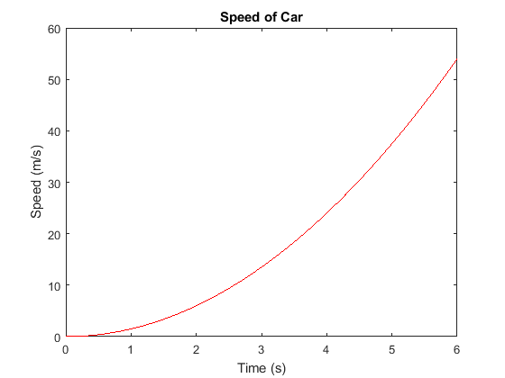
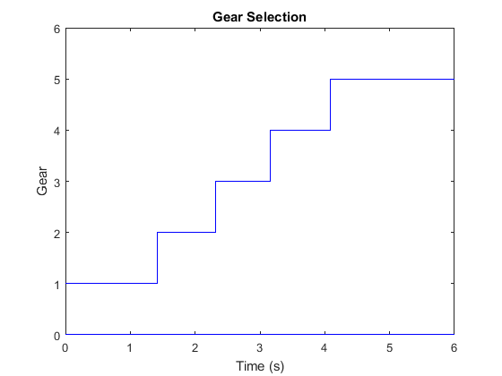

clc
clear
fprintf('Output for Program_02_8a written by Afeique Sheikh.\n\n')
res = 1000;
t = 0:1/res:6;
v = 1.5*t.^2;
figure
plot(t,v,'r-')
title('Speed of Car')
xlabel('Time (s)');
ylabel('Speed (m/s)');
xlim([0 6]);
ylim([0 60]);
len = length(t);
g = zeros(len);
for i=1:len
if v(i) >= 0 && v(i) < 3
g(i) = 1;
elseif v(i) >= 3 && v(i) < 8
g(i) = 2;
elseif v(i) >= 8 && v(i) < 15
g(i) = 3;
elseif v(i) >= 15 && v(i) < 25
g(i) = 4;
elseif v(i) >= 25
g(i) = 5;
end
end
figure
plot(t,g,'b-')
title('Gear Selection')
xlabel('Time (s)');
ylabel('Gear');
xlim([0 6]);
ylim([0 6]);
Output for Program_02_8a written by Afeique Sheikh.
 